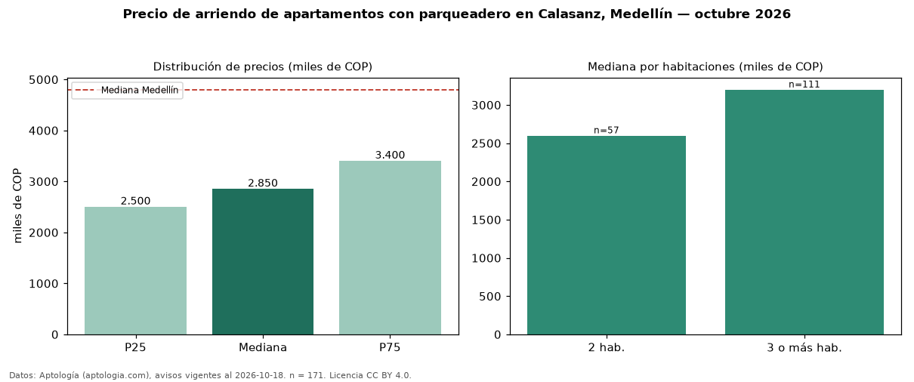

Precio de arriendo de apartamentos con parqueadero en Calasanz, Medellín — octubre 2026
COP 2,85 millones al mes es el canon mediano de apartamentos con parqueadero en arriendo en Calasanz, Medellín (n = 171 avisos). Frente a la mediana de todos los apartamentos en arriendo de Calasanz (COP 2,70 millones, n = 319), queda 6 % por encima; este segmento reúne el 54 % de esos avisos. Por metro cuadrado, la mediana es COP 41.729/m² al mes (n = 170), 4 % por encima del conjunto de referencia (COP 40.000/m²). El área mediana anunciada es 70 m². El segmento con más oferta es el de 3 o más habitaciones (111 avisos, mediana COP 3,20 millones); pasar de 2 habitaciones a 3 o más habitaciones cambia la mediana +23 %. El estrato más frecuente es 4 (59 % de los avisos con estrato). La mediana de todos los apartamentos en arriendo de Medellín es COP 4,80 millones (−41 % de diferencia). La mitad central de los avisos va de COP 2,50 millones a COP 3,40 millones (razón 1,4), una dispersión baja. Datos: Aptología (aptologia.com), CC BY 4.0 — https://www.aptologia.com/arriendo/medellin/calasanz. Archivos: PDF, CSV con las cifras y gráfica PNG.

| Avisos únicos | 171 |
|---|---|
| Percentil 25 | COP 2.500.000 |
| Mediana | COP 2.850.000 |
| Percentil 75 | COP 3.400.000 |
| Mediana por m² | COP 41.728 |
Fuente: avisos vigentes de portales inmobiliarios recopilados por Aptología, deduplicados (mínimo 30 avisos únicos por celda). Precios pedidos, no cerrados. Fecha: 2026-10-18.